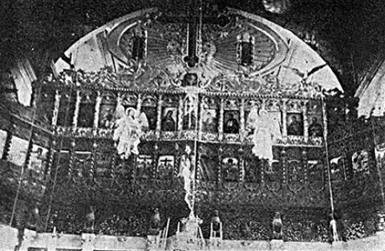

История · 1944
Подробности за църквата Св. Богородица
13 снимки от интериора на катедралната църква Св. Богородица. Още в Християнски храмове.

Интериорът на Св. Богородица - катедрален храм. Вляво е амвонът с дълбока резба, а вдясно, при колоната по-близо до олтара, е архиерейският трон.

Северният кораб на храма с амвона и
царския трон.

Южният кораб с Архиерейския трон.

Амвонът, изработен с художествена дърворезба през 1838 година, и стълбите до него.

Архиерейският трон в църквата Св. Богородица,
изработен през 1838 година.

Царският трон в храма.

Средният кораб на храма Св. Богородица с иконостаса и Архиерейския трон.

Горната част на средния кораб на храма със сляп купол в тавана.


Горната част на иконостаса (с дълбока резба) е изработена през 1838 година от орехово дърво, а долната от бял мрамор.

Западната страна с женското отделение (на галерията).

Изглед към колоните и стената на средния кораб на храма (северна страна).

Дясната страна на мраморния иконостас с иконите на Христос Спасител и Св. Йоан Кръстител.

Лявата страна на мраморния иконостас с иконите на Пресвета Богородица и нейното Рождество.